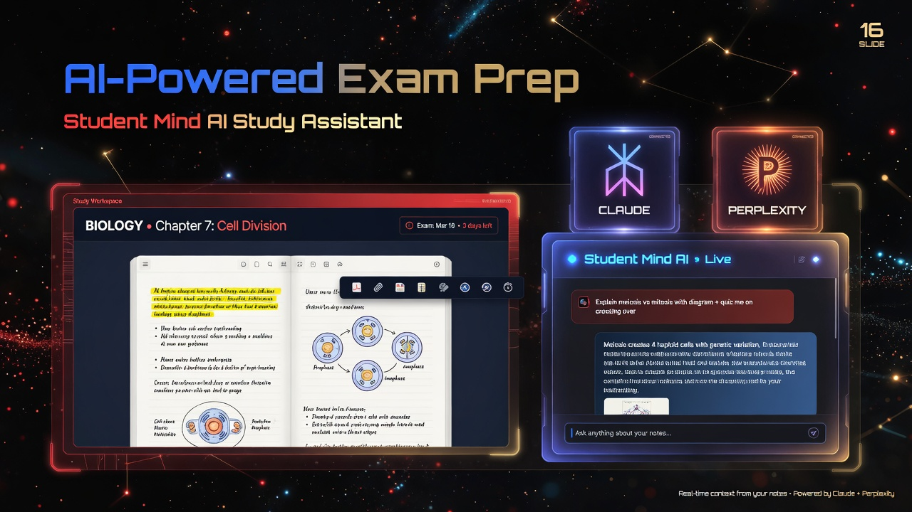

Библиотека
Загружай все материалы для учебы: делай заметки, спрашивай у AI, конспектируй.
Vibe-coding? Vibe studying!
Учеба, подкрепленная наукой и AI: выведи свою подготовку на новый уровень!
Не переключайся между десятком вкладок. Аутентичная среда для учебы — максимизируй свою продуктивность.
Загружай все материалы для учебы: делай заметки, спрашивай у AI, конспектируй.
Всемирноизвестный метод закрепления и повторения материала — доступнее и проще, как никогда: поддержка LaTeX, интервальное повторение.
Интерактивный граф, хорошо представляющий структуру материала. Создавай и изучай глубинные взаимосвязи между понятиями — или просто попроси AI сделать карту для тебя, основываясь на документах твоего проекта.
Без лишних затрат и ключей API: заходи в свою собственную подписку в Anthropic, Perplexity, Deepseek или во все сразу — Student Mind сохранит все вопросы и ответы от любой модели в базу данных.
Спланируй свою подготовку или делегируй это AI. Все твои учебные задачи в одном месте.
Попроси AI создать для тебя демонстрацию — все анимации нативно встраиваются в приложение и сохраняются в отдельной вкладке.
Открой PDF, выдели формулу ножницами — получи флешкарту за секунду.
Claude объясняет тему — Student Mind автоматически добавляет понятия в mind-map.
FSRS подскажет, когда повторить. Экспортируй в Anki для мобильного повторения.
Агент-экзаменатор проверит знания и найдёт слабые места до реального экзамена.

Версия 1.3.0 · Windows x64 · MIT License
Бесплатно. Без подписок. Ваши проекты, карточки и mind-map хранятся локально
в %APPDATA%\io.studentmind.app\